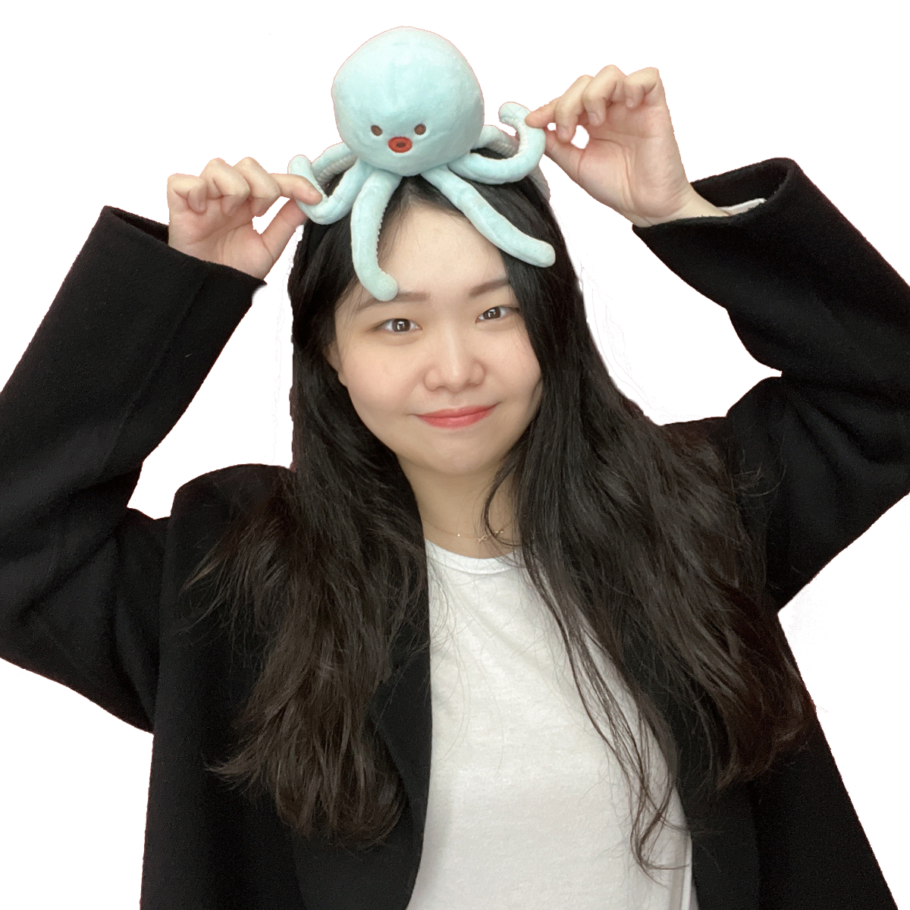

자기소개
 HELLO안녕하세요:) 멋쟁이사자처럼 프론트엔드 스쿨 4기 지원자 이성령입니다
WHO AM !
- BIRTH
- 1996년 12월 25일
- LOCATION
- 경기도 용인
- EDUCATION
- 서울소재 4년제 대학 소프트웨어학과
- CAREER
- 이커머스 마크업개발자 약 2년 경력
- sryung1225@gmail.com
MBT!
#ISFJ
#용감한_수호자
#신뢰
#임금_뒷편의_권력형
#성실함
#완벽주의자
#협력
#이타주의자
#내향과_외향_사이
#계획적
목표와 다짐

멋사의 일원이 되어 이루고자 하는 것은?
완성도 높은 주니어 프론트엔드 개발자가 되어
몸 담았던 업계에서 재도약 하는 것!
몸 담았던 업계에서 재도약 하는 것!
제가 멋쟁이 사자처럼에서 교육을 받고 싶은 이유는 혼자 공부하면서 반복되는 의문인 '이걸 지금 이렇게 공부하는게 맞는건가?'에 대한 조언이 간절하기 때문입니다. 의욕과는 다르게 혼자 공부하면서 중구난방 불규칙하게 튀는 방식에서 벗어나 제대로 된 이끔을 받고 싶습니다. 그리고 혼자라면 쉽게 경험할 수 없는 팀 프로젝트의 기회를 놓치고 싶지 않습니다.
멋사의 일원이 되어, 18주간의 짧고도 긴 시간동안 배우는 것들을 모두 내 것으로 만들어서 기초도 탄탄하고 실무에 믿고 던져질 수 있을 만한, 경쟁력 있는 프론트엔드 신입이 되고 싶습니다. 그러기 위해서 매일매일 충분한 예습과 복습을 진행하고, 온전히 나의 시간을 태우면서 이 과정을 들을 것 입니다.
18주간의 공부 계획
교육 커리큘럼과 이전 기수 회고 글을 참고하면서 주차별로 학습 일정을 세웠습니다.
- 0주차 (11/21 - 11/27)
- [개인] 개발 블로그 재정비
- [개인] git 재정비
- [개인] Vanila JS 토이 프로젝트 무작정 따라해보기 : 링크
- 1 - 5주차 (11/28 - 1/1)
- HTML/CSS 커리큘럼 충실하게 듣기
- [개인] 모던 자바스크립트 튜토리얼 완독하기 : 링크
- [개인] Vanila JS 토이 프로젝트 무작정 따라해보기 : 링크
- 6 - 11주차 (1/2 - 2/12)
- JavaScript 커리큘럼 충실하게 듣기
- [개인] CS 지식 간간히 채우기 : 링크
- [개인] React 기초 강의 무작정 따라해보기 : 링크
- 12 - 14주차 (2/13 - 3/5)
- React 커리큘럼 충실하게 듣기
- [개인] JavaScript 공부 내용 회고하기
- 15 - 18주차 (3/6 - 3/29)
- 팀 프로젝트에 몰입하기
- 꾸준하고 성실하게 학습 참여하기
- HTML, CSS 교육 동안은 정규 강의 시간 외에
JS, React 틈틈히 예습하기 - 팀 프로젝트 돌입 전에 충분한 역량 키우기
- 공부는 체력싸움이다! 운동 꾸준히 하기
- 기상시간, 취침시간 규칙적으로 맞추기
- 18주 동안 공부에만 몰입하기